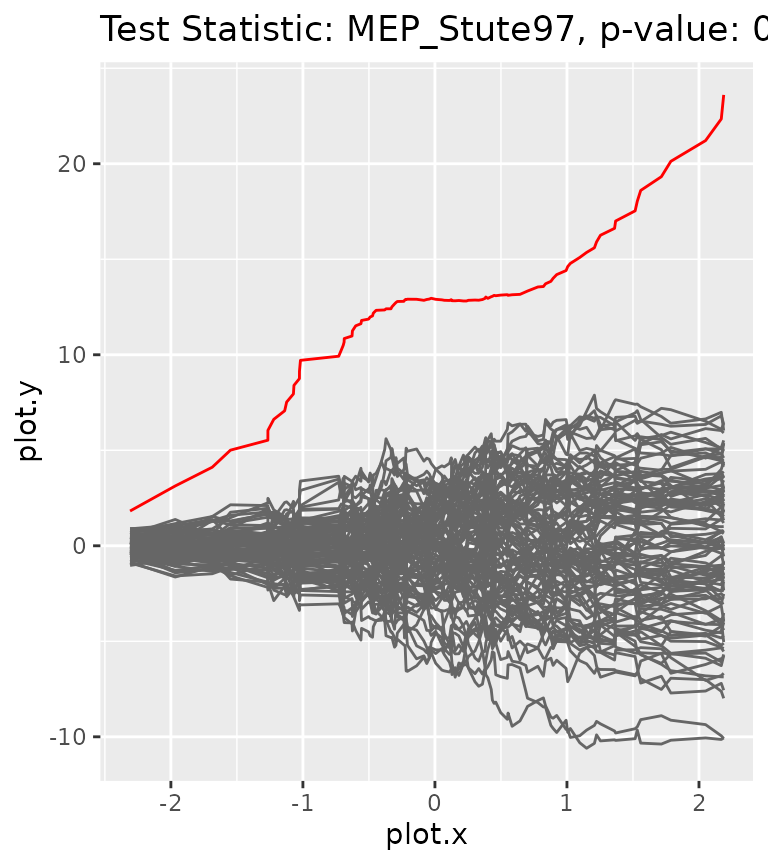
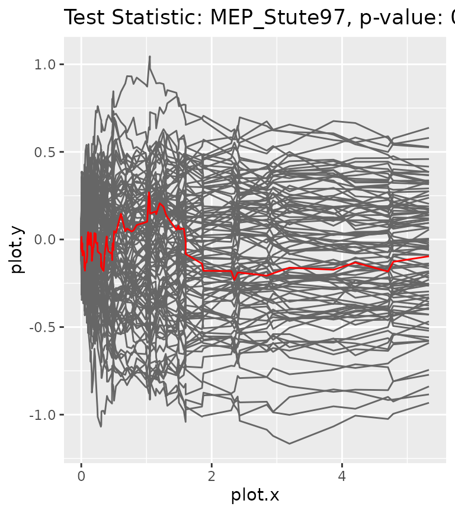

The package offers several test statistics that can be used for goodness-of-fit tests of conditional distribution families. However, there might be other statistics that the user wishes to use in their analysis. In the following, we will describe how custom test statistics can be defined and used along with the package.
The abstract base class TestStatistic
Whenever the user wants to define a new test statistic, they have to
create an R6 class inheriting from the abstract base class
TestStatistic implementing the method
calc_stat(). Given some data and a model to test for, the
method calculates the value of the test statistic as well as two vectors
(plot.x and plot.y) that can be used to plot
the corresponding process.
Example
In the following example, we will define a new test statistic, specifically the marked empirical process (MEP) as defined in Stute (1997). It is given by where denotes the regression function corresponding to a given model with parameter . In order to be able to plot the process in a two-dimensional grid, we will assume the covariates to be one-dimensional.
MEP_Stute97 <- R6::R6Class(
classname = "MEP_Stute97",
inherit = TestStatistic,
public = list(
calc_stat = function(data, model) {
# check for correct shape of data and definedness of model params
checkmate::assert_data_frame(data)
checkmate::assert_names(names(data), must.include = c("x", "y"))
checkmate::assert_matrix(as.matrix(x), ncols = 1)
checkmate::assert_class(model, "ParamRegrModel")
params <- model$get_params()
if (anyNA(params)) {
stop("Model first needs to be fitted to the data.")
}
# compute residuals and order them according to X
res <- data$y - model$mean_yx(data$x)
ord.id <- order(c(data$x))
res.ord <- res[ord.id]
# compute MEP (cumulative sum of the ordered residuals)
proc <- cumsum(res.ord) / sqrt(n)
# set private fields accordingly
private$value <- max(abs(proc))
private$plot.x <- c(data$x)[ord.id]
private$plot.y <- proc
invisible(self)
}
)
)Now, let us create an artificial dataset to use the test statistic with.
set.seed(123)
n <- 100
x <- rnorm(n)
model <- NormalGLM$new()
params_true <- list(beta = 3, sd = 0.5)
y <- model$sample_yx(x^2, params_true)
data <- dplyr::tibble(x = x, y = y)
head(data)#> # A tibble: 6 × 2
#> x y
#> <dbl> <dbl>
#> 1 -0.560 0.587
#> 2 -0.230 0.287
#> 3 1.56 7.17
#> 4 0.0705 -0.159
#> 5 0.129 -0.426
#> 6 1.72 8.80To evaluate the goodness-of-fit test using the new test statistic, we to fit two different models to the data: the correct model (using x^2) and a wrong model (using x).
model$fit(data, params_init = list(beta = 1, sd = 5), inplace = TRUE)
model$get_params()#> $beta
#> [1] 0.9404959
#>
#> $sd
#> [1] 4.094303
gt <- GOFTest$new(data = data, model_fitted = model, test_stat = MEP_Stute97$new(), nboot = 100)
gt$get_pvalue()#> [1] 0As expected, the p-value for the wrong model is very low, so it would get rejected. To visualize the results, we can plot the process corresponding to the given data together with the bootstrap processes.
gt$plot_procs()
Now, let us consider the correct model with covariates .
data_x2 <- tibble::tibble(x = data$x^2, y = data$y)
model$fit(data_x2, params_init = list(beta = 1, sd = 5), inplace = TRUE)
model$get_params()#> $beta
#> [1] 2.946964
#>
#> $sd
#> [1] 0.4783823
gt <- GOFTest$new(data = data_x2, model_fitted = model, test_stat = MEP_Stute97$new(), nboot = 100)
gt$get_pvalue()#> [1] 0.95The p-value for the correct model is rather high and would thus be accepted. We can again plot the corresponding processes.
gt$plot_procs()